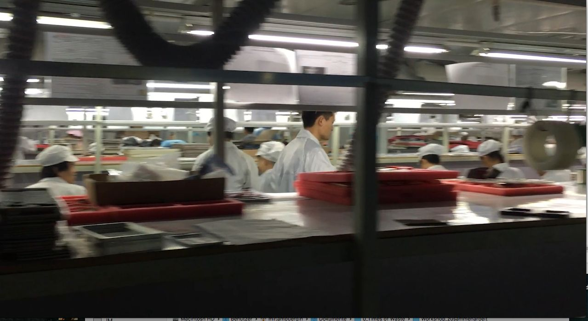
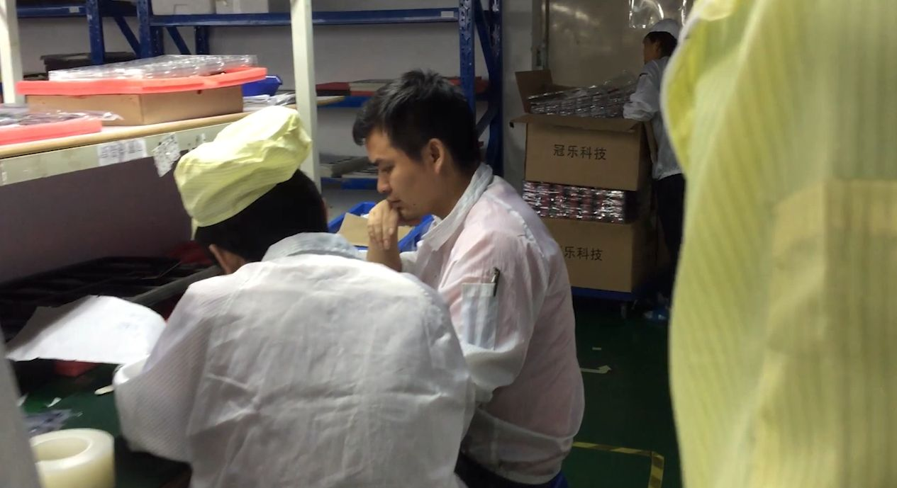
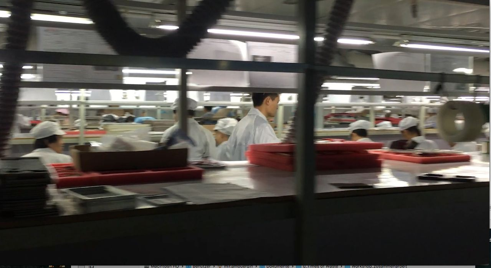
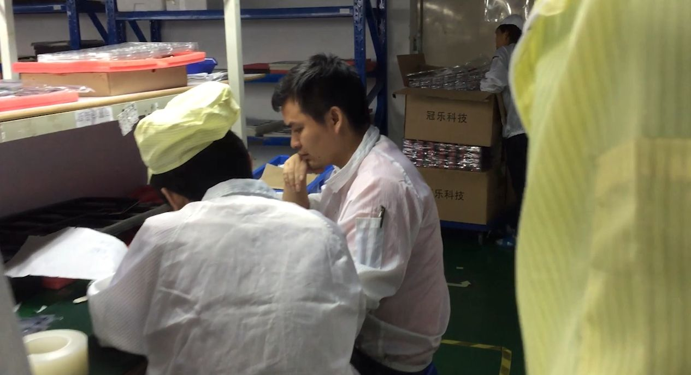

smartphone
object biography
Times of Waste

Production
Price Explosion in Rare Earths 2010-2012
In 2010, the prices for rare earth elements (REE) briefly rose to a multiple of their opening values. The cause of the price explosion was the export restrictions imposed by The People’s Republic of China – at that time, the producer of 98% of the world demand for REE. As a result, new mining projects have sprung up around the globe (California, Australia, Greenland, various African states) and millions have been invested in the substitution of REE (among others, the Fraunhofer Institute Germany) or in efficiency gains, for example in magnet production (Japan). These measures depressed prices and China’s market share has dropped to 90% of world production.
The trigger for the export restrictions was the dispute between China and Japan over the Senkaku Islands northeast of Taiwan. In order to hit the Japanese electronics industry that had invented the FeNdB magnets and owned valuable patents in the sector, China stopped exporting REE. The subsequent price explosion affected virtually all industrial nations, and made clear the dependence of high-tech producers on China.
Reactions to the neodymium shortage due to Chinese export restrictions
Following the Chinese pricing policy, new rare earth mining projects sprang up like mushrooms after 2012, among others, in Namibia, Greenland and Australia. Since the lead time for larger mining projects is usually 10 years or more, most of these projects were not realized and have been put on ice after a reduction in the price of rare earths.
In Germany, the EU, Japan and the US, the rare earth price explosion in 2012 triggered investments worth millions in programs for the replacement or saving of rare earths:
In Germany, several REE projects were launched primarily at Fraunhofer Institutes (financial volume of approximately €20 million). The focus is on protecting the German automotive industry (including electric cars) from REE shortages and reliance on China. The US Department of Energy launched REACT (Rare Earth Alternatives in Critical Technologies) with the goal to replace heavy REE elements needed for the defence and space industries.
Literature: Kiggins, Ryan David. The Political Economy of Rare Earth Elements: Rising Power and Technological Change. Springer-Verlag 2015.
„Interestingly, the Nd2Fe14B magnet alloy was developed in 1982 by General Motors and Sumitomo Specialty Metals in response to the high cost of samarium-cobalt (SmCo) magnets“ SAE International
Neodymium smartphone production chain in China
- Mining of the rare earths, partly at sites with iron mining (Bayan Obo)
- Extraction of rare earths with powerful acids
- Separation of the rare earths by centrifuging
- Mixture of neodymium and dysprosium with iron, boron and possibly further components (Nd2Fe14B)
- Magnetic production by sintering or hot deformation
- Magnets are made or filed into the desired shape
- Magnets are magnetized
- The magnets are coated
- Several more intermediate steps, some of which are not precisely known
- Installation of the magnets in the loudspeakers, microphone and vibration alarm of smartphones, for example, by Foxconn
Neodymium in smartphones

A smartphone contains about 0.4 g of neodymium (speaker, vibrator, microphone, circuit board) – the sources vary. What the concentration in the Chinese mines is where the majority of the mining takes place is not revealed by the People’s Republic of China. In the extraction of neodymium it is not the small amount of the metal processed from large quantities of rock that is problematic (as with gold); rather it is the attendant radioactivity and the use of acid.
Audioessay object biography Smartphone/Neodym (10:11)

Shenzhen

 




Shenzhen, Perl River Delta, China: production of smartphones (stills from video).
The material comes from the four-part documentary Chinafrika.mobile by Daniel Kötter, who worked on the same smartphone aspects as the team of Times of Waste in the context of the art and exhibition project Chinafrika.under construction: raw material extraction, production, reuse, recycling. The footage was created locally in Kolwezi, Shenzhen, Guangzhou and Lagos in collaboration with local protagonists.
Camera / interview: Min Mo, Ten Jiang, Tang Jiangdong, Chibuzo Goodluck, Brown
Production: Allyn Gaestel, Boping Zhang
Editing, camera: Daniel Kötter